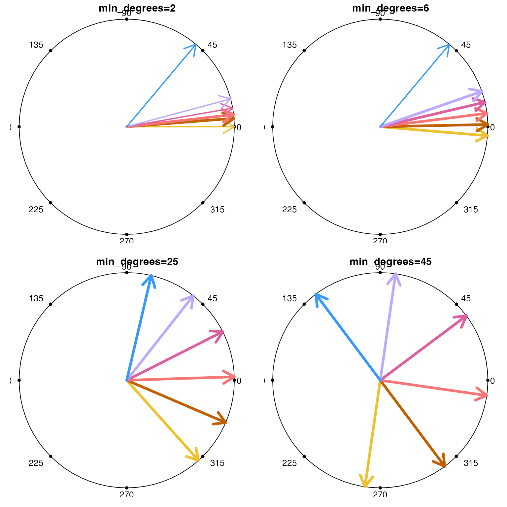

Spread angles to minimum degrees difference
Usage
spread_degrees(
degrees,
min_degrees = 10,
iteration = 1,
max_iterations = 20,
use_colors = NULL,
do_plot = FALSE,
verbose = FALSE,
...
)Arguments
- degrees
numericvector of angles in degrees, expected to range from0to360. Values are fit to the rangec(0, 360)usingdegrees %% 360.- min_degrees
numericindicating the minimum angle in degrees to allow between adjacent angles.- iteration, max_iterations
numericused internally to iteratively confirm that angles are spread bymin_degrees.- use_colors
characteroptional colors to use whendo_plot=TRUE, default NULL assigns color by groups of angles, the applies a light-to-dark color gradient.- do_plot
logicalwhether to plot a visual with the output, default FALSE.- verbose
logicalindicating whether to print verbose output. Values 2 or 3 will print progressively more information.- ...
additional arguments are ignored.
Details
The function takes a vector of angles in degrees, and
adjusts any angles with adjacent angle below a minimum
angle min_degrees until the minimum angle is min_degrees.
If all input angles fit this criteria, it is returned
unchanged, otherwise it will adjust angles then
iteratively call itself until the condition is met.
If all angles are less the min_degrees degrees from
the nearest adjacent angle, then all angles are equally
spaced around 360 degrees.
See also
Other venndir geometry:
degrees_to_adj(),
diff_degrees(),
display_angles(),
mean_degree_arc(),
mean_degrees(),
rescale_coordinates(),
three_point_angle()
Examples
degrees <- c(5, 10, 15, 100, 105, 110, 200, 300, 358);
degrees
#> [1] 5 10 15 100 105 110 200 300 358
use_colors <- colorjam::rainbowJam(length(degrees))
withr::with_par(list(mfrow=c(2, 2)), {
spread_degrees(degrees, min_degrees=0,
do_plot=TRUE, use_colors=use_colors)
spread_degrees(degrees,
do_plot=TRUE, use_colors=use_colors)
spread_degrees(degrees, min_degrees=20,
do_plot=TRUE, use_colors=use_colors)
spread_degrees(degrees, min_degrees=30,
do_plot=TRUE, use_colors=use_colors)
})
#> [1] 20.375 -69.625 -39.625 50.375 80.375 110.375 200.000 140.375 -9.625
degrees2 <- sample(degrees);
degrees2
#> [1] 200 15 358 110 10 300 5 100 105
spread_degrees(degrees2);
#> [1] 200 2 22 105 12 300 352 115 95
degrees3 <- c(0, 5, 6, 10, 15, 50)
names(degrees3) <- LETTERS[1:6];
colors3 <- colorjam::rainbowJam(6)
withr::with_par(list(mfrow=c(2, 2)), {
spread_degrees(degrees3, min_degrees=2,
use_colors=colors3, do_plot=TRUE)
spread_degrees(degrees3, min_degrees=6,
use_colors=colors3, do_plot=TRUE)
spread_degrees(degrees3, min_degrees=25,
use_colors=colors3, do_plot=TRUE)
spread_degrees(degrees3, min_degrees=45,
use_colors=colors3, do_plot=TRUE)
})

#> [1] 261.83333 306.83333 351.83333 36.83333 81.83333 126.83333